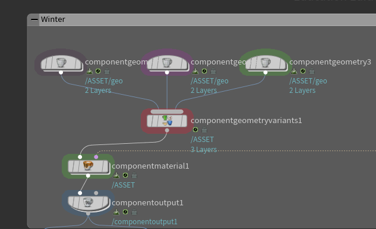
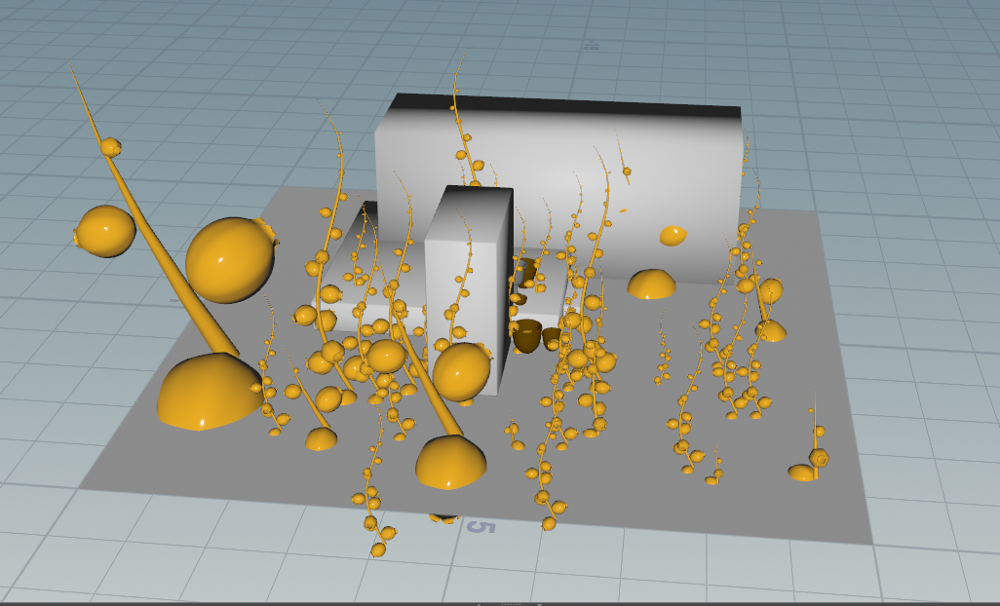
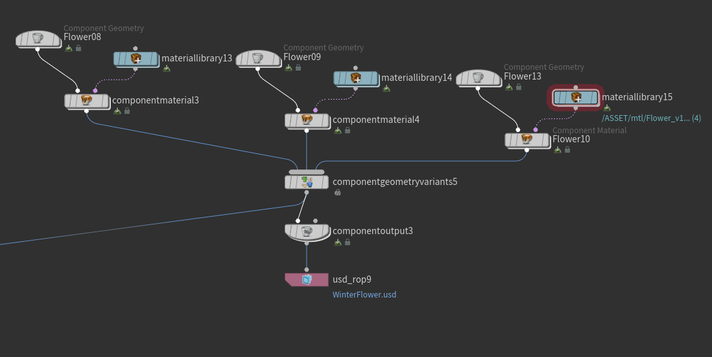

Week3
Houdini-Unreal USD Pipeline
Jan 25
HAVE COMPLETED:
TO-DO LIST:
-
Last week, I tested VAT Instancing in Unreal
-
Try a different method of Instancer in Houdini and test its performance in Unreal
-
Try animated USD Instancing in Unreal, which is not working
-
Figure out the USD pipeline from Houdini to Unreal
-
Test animated USD variants and USD layering workflows
Static Mesh:
I think the biggest limitation of using USD in Unreal is that Unreal doesn’t really support deforming animations very well. USD is especially suitable for large-scale scene layout and management.Using static meshes gives us more flexibility when populating and dressing the scene.
What I worked on last week was importing animated USD files into Unreal and layering them successfully.
I also tested Yichen’s flowers. This is my setup in Houdini for Yichen’s flower variants. In Unreal, you can choose between different variants, and if there are multiple materials, you can switch those as well.


I also experimented with some material variants in Houdini, so in Unreal I can choose between different materials. I can also use payloads if the geometry is too large.
I also tried using Layout in Houdini, which allows me to create my own asset gallery and use painting tools to lay out the plants. I generate the layout using referenced assets, so the layout stage also contains and supports asset variants.

Troubleshooting
If you want to import deforming animation as a USD file into Unreal with layering, you need to make sure the time samples are enabled here. Otherwise, the geometry will not animate.


During the AI Summit, I explored more about the USD Variants and have some problems exploring as USD. First, when I click here, I can't export the USD, and keep error here.


And also try to manage the scene, and toggle off and on, whch is more effecent for asset or simluation.

-
Try USD variants and PDG
-
Try to apply the opacity map